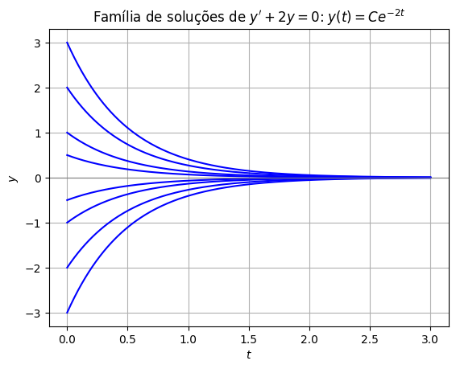
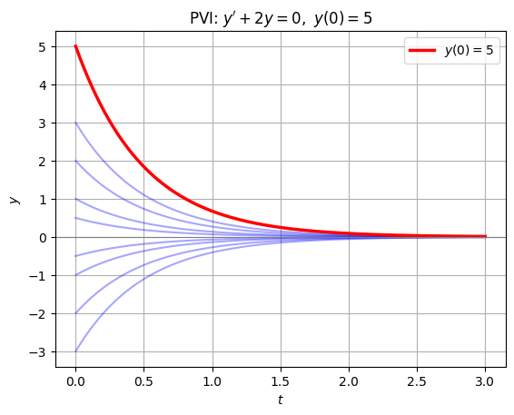
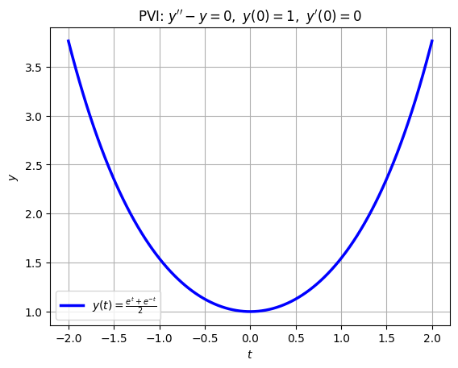
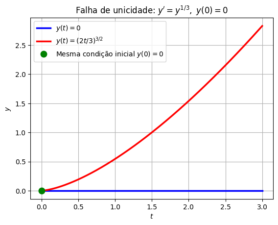

Soluções de uma ED#
Nas últimas aulas, resolvemos algumas equações diferenciais — por integração direta (\(y'=2t\)), por separação de variáveis (\(y'=ky\)) — e vimos, através do campo de direções, como as soluções se comportam como um rio que carrega um barquinho. Mas o que significa, exatamente, dizer que uma função é solução de uma equação diferencial?
Definição. Uma função \(y=\varphi(t)\), definida e derivável (o quanto for necessário) em um intervalo \(I\), é uma solução da equação diferencial
em \(I\) se, ao substituirmos \(y\) por \(\varphi(t)\) e cada derivada pela derivada correspondente de \(\varphi\), a igualdade é satisfeita para todo \(t \in I\).
Em outras palavras: verificar se uma função é solução é, no fundo, um exercício de Cálculo — calcular derivadas e substituir de volta na equação. Nada de mágica.
Verificando se uma função é solução#
Exemplo 1. Verifique se \(y = e^{3t}\) é solução de
Calculamos \(y' = 3e^{3t}\) e substituímos:
A igualdade vale para todo \(t\), logo \(y=e^{3t}\) é, de fato, solução.
Exemplo 2 (cuidado com «parecer certo»). A função \(y=e^{2t}\) não é solução dessa mesma equação:
A lição: ter «a cara» de uma solução não basta — é preciso sempre verificar substituindo de volta na equação original.
Exemplo 3 (segunda ordem). Verifique se \(y = \cos t + \text{sen}\,t\) é solução de
Temos \(y' = -\text{sen}\,t + \cos t\) e \(y'' = -\cos t - \text{sen}\,t\). Substituindo:
Bônus: verificação simbólica com Python#
Pacotes de matemática simbólica, como o sympy, conseguem fazer essa verificação automaticamente — uma boa forma de conferir suas contas na mão:
import sympy as sp
t = sp.symbols('t')
y = sp.cos(t) + sp.sin(t)
resultado = sp.diff(y, t, 2) + y
print("y'' + y =", sp.simplify(resultado))
---------------------------------------------------------------------------
ModuleNotFoundError Traceback (most recent call last)
Cell In[1], line 1
----> 1 import sympy as sp
3 t = sp.symbols('t')
4 y = sp.cos(t) + sp.sin(t)
ModuleNotFoundError: No module named 'sympy'
Família de soluções e Problemas de Valor Inicial (PVI)#
Repare no padrão dos exemplos das aulas passadas: a equação \(y'=2t\) tinha solução geral \(y=t^2+C\); a equação \(y'=ky\) tinha solução geral \(y=Ae^{kt}\). Em ambos os casos apareceu uma constante arbitrária — e não por acaso.
Resultado (informal). A solução geral de uma equação diferencial de ordem \(n\) costuma depender de \(n\) constantes arbitrárias \(C_1, \dots, C_n\). Cada escolha dessas constantes fornece uma solução particular; o conjunto de todas as escolhas possíveis forma a família de soluções (ou solução geral) da equação.
Como no Cálculo 1, para escolher uma solução específica dentro da família precisamos de informação extra: os valores de \(y\) (e de suas derivadas, se a ordem for maior que 1) em algum ponto \(t_0\). Uma equação diferencial acompanhada dessas condições é chamada de Problema de Valor Inicial (PVI):
Resolver um PVI significa: achar a solução geral (a família) e, depois, usar as \(n\) condições iniciais para determinar as \(n\) constantes — isolando exatamente uma curva dentro da família.
Exemplos de soluções gerais (famílias)#
Exemplo 4. Mostre que \(y = Ce^{-2t}\) é solução de
para qualquer valor da constante \(C\).
Calculamos \(y' = -2Ce^{-2t}\) e substituímos:
Como a igualdade vale independentemente do valor de \(C\), toda a família \(y=Ce^{-2t}\) é solução — não uma curva isolada, mas infinitas, uma para cada \(C\):
import numpy as np
import matplotlib.pyplot as plt
t = np.linspace(0, 3, 200)
for C in [-3, -2, -1, -0.5, 0.5, 1, 2, 3]:
plt.plot(t, C*np.exp(-2*t), 'b')
plt.axhline(0, color='0.5', linewidth=0.8)
plt.title(r"Família de soluções de $y' + 2y = 0$: $y(t)=Ce^{-2t}$")
plt.xlabel("$t$"); plt.ylabel("$y$")
plt.grid(True)
plt.show()

Exemplos de PVI: a condição inicial escolhe a curva#
Exemplo 5. Resolva o PVI
Já sabemos, do Exemplo 4, que a solução geral é \(y(t) = Ce^{-2t}\). Usamos a condição inicial para achar \(C\):
Logo, a solução do PVI é
Entre todas as curvas azuis da família, a condição inicial «escolheu» exatamente uma:
t = np.linspace(0, 3, 200)
for C in [-3, -2, -1, -0.5, 0.5, 1, 2, 3]:
plt.plot(t, C*np.exp(-2*t), 'b', alpha=0.35)
plt.plot(t, 5*np.exp(-2*t), 'r', linewidth=2.5, label=r"$y(0)=5$")
plt.axhline(0, color='0.5', linewidth=0.8)
plt.title(r"PVI: $y'+2y=0,\ y(0)=5$")
plt.xlabel("$t$"); plt.ylabel("$y$")
plt.legend()
plt.grid(True)
plt.show()

Um PVI de segunda ordem precisa de duas condições#
Exemplo 6. A equação
tem solução geral \(y(t) = C_1 e^{t} + C_2 e^{-t}\) (verifique por substituição — é um bom exercício!). Como é uma equação de segunda ordem, um PVI para ela precisa de duas condições, por exemplo \(y(0)\) e \(y'(0)\). Considere
Da solução geral, \(y'(t) = C_1 e^t - C_2 e^{-t}\). Substituindo \(t=0\) nas duas expressões:
Resolvendo esse sistema linear (some as duas equações): \(C_1 = C_2 = \tfrac12\). Logo,
t = np.linspace(-2, 2, 200)
plt.plot(t, 0.5*np.exp(t) + 0.5*np.exp(-t), 'b', linewidth=2.5,
label=r"$y(t) = \frac{e^t+e^{-t}}{2}$")
plt.title(r"PVI: $y''-y=0,\ y(0)=1,\ y'(0)=0$")
plt.xlabel("$t$"); plt.ylabel("$y$")
plt.legend()
plt.grid(True)
plt.show()

Uma EDO sempre tem solução? (Existência e Unicidade)#
Em todos os exemplos acima, começamos supondo que a equação tinha solução e fomos atrás dela. Mas ficam duas perguntas naturais:
Será que sempre existe alguma solução?
Se existe, ela é a única possível?
A resposta tem uma bela intuição geométrica, ligada ao campo de direções que vimos na aula passada: se, em cada ponto \((t,y)\), o campo indica uma direção bem definida, que varia suavemente de um ponto para o outro, é razoável esperar que — soltando um barquinho em qualquer ponto — exista um único caminho que ele possa seguir, sem bifurcações nem buracos no meio do rio.
Resultado (Existência e Unicidade, versão informal). Considere o PVI
Se \(f(t,y)\) e \(\dfrac{\partial f}{\partial y}(t,y)\) forem funções contínuas em uma região ao redor do ponto \((t_0, y_0)\), então o PVI possui exatamente uma solução, definida ao menos em algum intervalo em torno de \(t_0\).
Intuitivamente: a continuidade de \(f\) garante que o campo de direções não tem «saltos» — logo existe uma curva seguindo o fluxo (existência). Já a continuidade de \(\partial f/\partial y\) garante que curvas vizinhas não se cruzam nem se fundem (unicidade).
A boa notícia: praticamente todas as equações que vamos estudar neste curso — lineares, separáveis, autônomas — satisfazem essas condições sem esforço. Por isso podemos confiar nas técnicas que aprenderemos: elas encontram a solução, não uma entre várias.
Quando a unicidade falha: um exemplo clássico#
E se as hipóteses do resultado não valerem? Considere o PVI
Aqui \(f(t,y) = y^{1/3}\) é contínua em toda parte — mas
explode (não é contínua) exatamente em \(y=0\) — o próprio ponto inicial! As hipóteses do resultado acima falham ali.
E, de fato, esse PVI tem mais de uma solução. Além da solução óbvia \(y(t)\equiv 0\), a função
também satisfaz a equação e a mesma condição inicial (verifique — é um bom exercício!). Geometricamente, o «rio» do campo de direções se bifurca exatamente no ponto de partida, e o barquinho pode escolher qualquer um dos dois caminhos:
t = np.linspace(0, 3, 200)
y1 = np.zeros_like(t)
y2 = (2*t/3)**1.5
plt.plot(t, y1, 'b', linewidth=2.5, label=r"$y(t)=0$")
plt.plot(t, y2, 'r', linewidth=2.5, label=r"$y(t)=(2t/3)^{3/2}$")
plt.plot(0, 0, 'go', markersize=9, label="Mesma condição inicial $y(0)=0$")
plt.title(r"Falha de unicidade: $y' = y^{1/3},\ y(0)=0$")
plt.xlabel("$t$"); plt.ylabel("$y$")
plt.legend()
plt.grid(True)
plt.show()

O que vem a seguir#
A partir de agora, sempre que resolvermos uma EDO, faremos duas coisas: encontrar a solução (geral, ou de um PVI) e ter em mente que — para as equações «bem-comportadas» que veremos ao longo do curso — essa solução é a única possível.
Na próxima seção, vamos organizar melhor o «zoológico» das equações diferenciais: como classificá-las por ordem, linearidade e outros critérios, o que vai nos ajudar a escolher a técnica certa para cada uma.